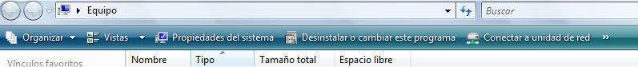

INTRODUCCION A WINDOWS
Windows es un sistema operativo gráfico que trabaja por medio de ventanas; esto le permite abrir muchas aplicaciones simultaneamente, a esto se le conoce como multitarea.
Windows permite hacer todas las labores comunes de cualquier sistema operativo: copiar archivos a diferentes unidades de almacenamiento, manipular los archivos: cambiarles el nombre, eliminarlos, recuperarlos, copiarlos, moverlos de lugar, etc. Por otro lado, permite la manipulación de impresoras, el manejo de múltiples resoluciones de pantalla, instalación de escáneres y cámaras, etc.
Asimismo, Windows tiene una colección de accesorios que permiten procesar palabras, dibujar, conectarse remotamente, conectarse a Internet, etc.